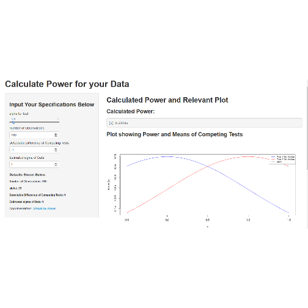
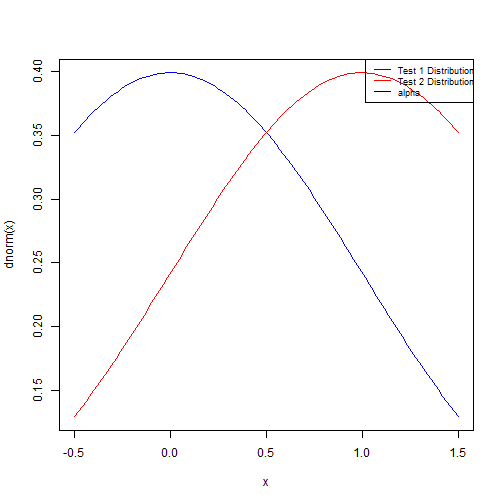

- Use this app if you want to calculate the power of your experiment.
- You can also use this app to get a ballpark estimate of how many observations you need to take, given a preferred statistical power, alpha, and estimated sigma.
Me
unemployed

output_power=function(alpha,factor){
power=1-pnorm(qnorm(1-alpha)-factor)
return(power)
}
alpha=.05
delta_mu=.1
sigma=1
n_observations=100
factor=delta_mu/(sigma/sqrt(n_observations))
power=output_power(alpha,factor)
y=delta_mu/(sigma/sqrt(n_observations))
x=seq(-abs(y)*.5,abs(y)*1.5,length.out=100)
0.2595
## Warning: plot type 'ln' will be truncated to first character
 Hope you enjoy this application.